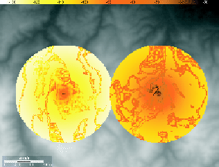
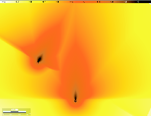
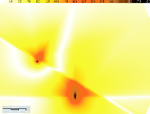
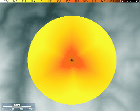
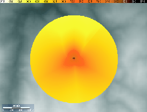

Siguiente: Variación de los modelos
Subir: Ejemplos de aplicación
Anterior: Cálculos asociados a una
Índice General
También se mencionó en el capítulo 7, que al
crear una red celular, el usuario tiene la posibilidad de definir
las características de las antenas que la van a conformar. Dentro de
estas características se encuentran: la potencia radiada, el tipo de
antena (isotrópica o direccional), el canal de frecuencias, el tilt
y el azimut. La variación de cualquiera de estos parámetros tendrá
un efecto directo en el resultado de la predicción de potencia
mediana de señal, lo cual se ilustrará en los ejemplos siguientes.
En primer lugar, tomando una antena del tipo isotrópica y
asociándole el modelo de Okumura-Hata, se observa en la figura
11.3 que al aumentar la potencia de la misma
(ilustración de la derecha) se obtienen valores de potencia mayores
en la zona de estudio luego de realizada la predicción, lo cual se
traduce en una mayor cobertura en ausencia de otras antenas
interferentes. A su vez, como era de esperarse al tratarse de una
antena isotrópica, se observa que la irradiación es homogénea en
todas las direcciones.
Figura 11.3:
Variación de la potencia con una antena isotrópica
|

|
En segundo lugar, si se consideran ahora antenas del tipo
direccionales y se les asocia el modelo de propagación en vacío, se
obtendrán los resultados ilustrados en la figura 11.4.
La radiación en este caso deja de ser homogénea y los valores de
potencia de señal resultantes son mayores en las direcciones donde
la ganancia relativa de la antena es mayor. En este ejemplo, las dos
antenas tienen el mismo patrón de radiación, pero distintos valores
de tilt y azimut. El efecto del azimut es evidente y el efecto del
tilt, que es mayor en la antena a la izquierda, se refleja en una
mayor concentración de la potencia en la proximidad de la misma. En
la imagen de la derecha se aprecia la C/I para este caso. La
relación frente espalda trae como consecuencia que la C/I en la
cercanía de la antena de la derecha sea mucho mayor.
Figura 11.4:
Variación del azimut y del tilt en dos antenas
direccionales (potencia y C/I)
|


|
Figura 11.5:
Radiobase con tres antenas y modelos distintos
|


|
En la figura 11.5 puede verse una predicción con
tres antenas directivas ubicadas en la misma radiobase, con las
mismas características con la excepción del azimut que vale 0, 120 y
240 grados respectivamente. En la imagen de la izquierda las tres
antenas tienen asociado el modelo de vacío, mientras que en la de la
derecha se asoció a la antena de azimut 0 grados el modelo de
Okumura-Hata para áreas abiertas, a modo ilustrativo de cómo los
modelos en una predicción de SAPO pueden variar incluso
dentro de una misma radiobase. Puede verse que los resultados
cambian levemente, las antenas que conservan el modelo de vacío
predominan frente a la otra.
Siguiente: Variación de los modelos
Subir: Ejemplos de aplicación
Anterior: Cálculos asociados a una
Índice General
SAPO